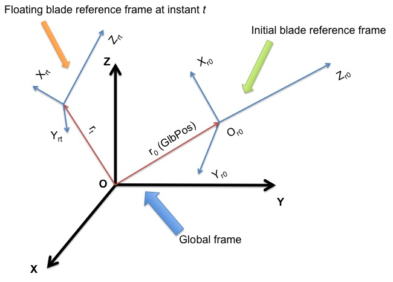
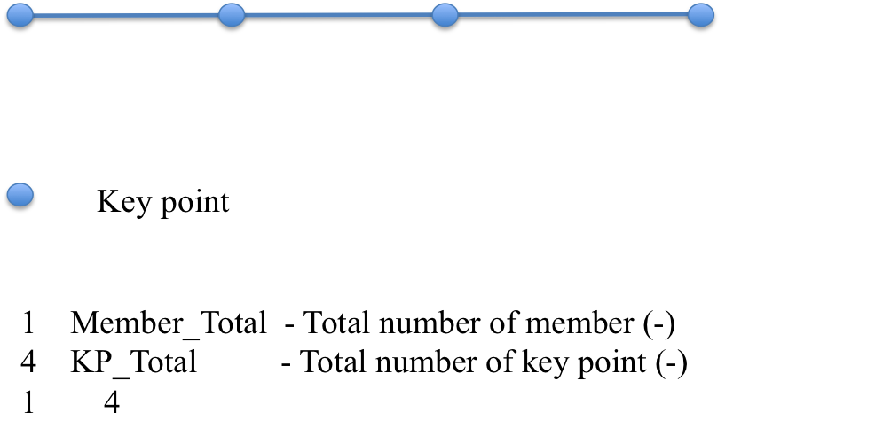
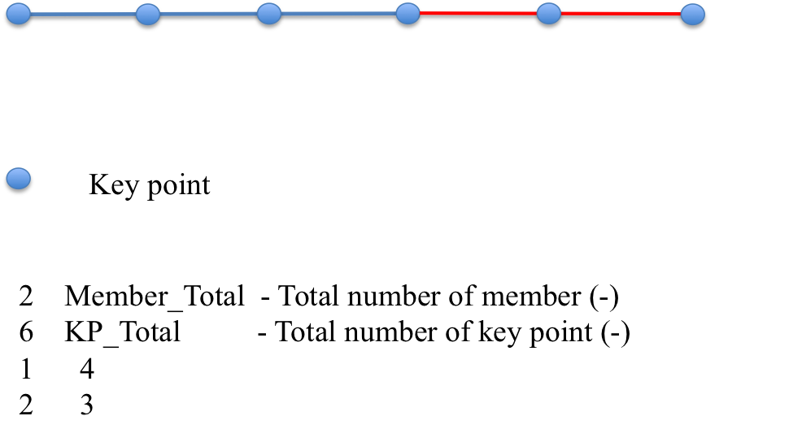
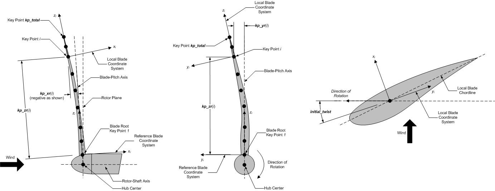

4.7.3. 입력 파일
사용자는 블레이드 모델 매개변수를 지정합니다. 기하학적 구조, 단면적 특성, FE 및 출력 제어 매개변수를 포함합니다. 기본 BeamDyn 입력 파일과 블레이드 속성 입력 파일을 통해. 독립형 모드에서 사용하는 경우 추가 드라이버 입력 파일이 필요합니다. 이 드라이버 파일은 시뮬레이션 범위, 루트 모션, 외부에서 적용되는 하중을 포함하여 FAST가 일반적으로 BeamDyn에 제공하는 입력을 지정합니다.
행 수가 지정된 테이블을 제외하고 입력 파일에서 행을 추가하거나 제거해서는 안됩니다.
4.7.3.1. 장치
BeamDyn은 SI 시스템(kg, m, s, N)을 사용합니다. 별도로 지정하지 않는 한 각도는 라디안 단위로 간주됩니다.
4.7.3.2. BeamDyn 드라이버 입력 파일
드라이버 입력 파일은 BeamDyn의 독립형 버전에만 필요합니다. 여기에는 일반적으로 FAST에 의해 설정되고 결합되지 않은 모델에 대한 시뮬레이션을 제어하는 데 필요한 입력이 포함되어 있습니다.
드라이버 입력 파일은 사용자용이지만 소프트웨어에서는 사용되지 않는 두 줄의 헤더 정보로 시작됩니다. BeamDyn이 독립 실행형 모드에서 실행되는 경우 결과 출력 파일 앞에는 이 드라이버 입력 파일과 동일한 이름이 붙습니다.
샘플 BeamDyn 드라이버 입력 파일은 다음과 같습니다. 섹션 4.7.8.1.
4.7.3.2.1. 시뮬레이션 제어 매개변수
DynamicSolve 는 BeamDyn이 동적 해석을 사용해야 하는지 여부를 지정하는 논리 변수입니다(DynamicSolve = true) 또는 정적 분석(DynamicSolve = false).
t_initial 및 t_final 는 각각 시뮬레이션 시작 시간과 시뮬레이션 종료 시간을 지정합니다.
dt 는 시간 단계 크기를 지정합니다.
4.7.3.2.2. 중력 매개변수
Gx , Gy 및
이 플래그 값 아래에 Gz 는 중력 벡터의 구성 요소를 다음과 같이 지정합니다. \(X\), \(Y\)및
이 플래그 값 아래에 \(Z\) 는 각각 전역 좌표계의 방향입니다. FAST에서는 일반적으로 0, 0 및 -9.80665입니다.
4.7.3.2.3. 관성 프레임 매개변수
이 섹션은 두 개의 관성 프레임, 전역 좌표계와 초기 블레이드 기준 좌표계 간의 관계를 정의합니다.
GlbPos(1), GlbPos(2)및
이 플래그 값 아래에 GlbPos(3) 는 초기 전역 위치 벡터의 세 가지 구성 요소를 지정합니다. \(X\), \(Y\)및
이 플래그 값 아래에 \(Z\) 방향은 전역 좌표계에서 확인됩니다. 그림 참조 그림 4.29. 그리고 다음 \(3 \times 3\) 방향 코사인 행렬(GlbDCM)는 전역 좌표계의 회전을 초기 블레이드 기준 좌표계와 연결합니다.


그림 4.29 BeamDyn의 전역 및 블레이드 좌표계.
4.7.3.2.4. 블레이드 부동 기준 프레임 매개변수
이 섹션은 본체 부착 부동 프레임인 블레이드 부동 기준 프레임을 정의하는 매개변수를 지정합니다. 블레이드 루트는 이 프레임의 원점에서 캔틸레버식입니다. 드라이버 입력 파일을 기반으로 플로팅 블레이드 참조 프레임은 전역 좌표계의 원점을 중심으로 일정한 강체 회전 모드에 있다고 가정합니다. 즉,
여기서 \(v_{rt}\) 는 루트(플로팅 블레이드 참조 프레임의 원점) 병진 속도 벡터입니다. \(\omega_r\) 는 상수 루트(플로팅 블레이드 참조 프레임의 원점) 각속도 벡터입니다. 그리고 \(r_t\) 는 이전 섹션에서 순간적으로 소개된 전역 위치 벡터입니다. \(t\), 참조 그림 4.29. 플로팅 블레이드 기준 프레임은 처음의 초기 플로팅 블레이드 기준 프레임과 일치합니다. \(t=0\).
RootVel(4), RootVel(5)및
이 플래그 값 아래에 RootVel(6) 는 상수 루트 각속도 벡터의 세 가지 구성요소를 지정합니다. \(X\), \(Y\)및
이 플래그 값 아래에 \(Z\) 축은 각각 전역 좌표계입니다.
RootVel(1), RootVel(2)및
이 플래그 값 아래에 RootVel(3)는 루트 병진 속도 벡터의 세 가지 구성요소입니다.
전역 좌표계의 \(X\), \(Y\)및
이 플래그 값 아래에 \(Z\) 방향은 각각 Eq.를 기반으로 계산됩니다. (4.69).
BeamDyn은 예를 들어 다음을 변경하여 더 복잡한 루트 모션을 처리할 수 있습니다. BD_InputSolve 서브루틴 Driver_Beam.f90
(독립형 BeamDyn 재컴파일 필요)
블레이드는 강체 모션 모드에서 초기화됩니다. 즉, 이 섹션에서 정의된 루트 속도 정보와 이전 섹션에서 정의된 위치 정보를 기반으로 블레이드를 따라 다른 지점의 모션이 다음과 같이 초기화됩니다.
여기서 \(a_{0}\) 는 블레이드를 따른 초기 병진 가속도 벡터입니다. \(v_0\) 및 \(\omega_0\) 는 각각 블레이드를 따른 초기 병진 및 각속도 벡터입니다. 그리고 \(P\) 는 루트를 기준으로 블레이드를 따른 위치 벡터입니다. 이러한 방정식은 실제로 NWTC 라이브러리의 메시 매핑 루틴을 호출하여 구현됩니다.
4.7.3.2.5. 적용 하중
이 섹션에서는 독립형 해석을 위해 분산, 점(집중) 및 팁 집중 하중을 포함한 적용 하중을 정의합니다.
처음 6개 항목 DistrLoad(i), \(i \in [1,6]\)는 전체 좌표계에서 균일하게 분포된 힘 벡터의 세 가지 구성요소와 균일하게 분포된 모멘트 벡터의 세 가지 구성요소를 각각 지정합니다.
다음 6개 항목 TipLoad(i),
\(i \in [1,6]\)는 전역 좌표계에서 집중 팁 힘 벡터의 세 가지 구성 요소와 집중 팁 모멘트 벡터의 세 가지 구성 요소를 각각 지정합니다.
NumPointLoads 는 블레이드를 따라 적용되는 점하중 수를 정의합니다. 이 입력 다음의 테이블에는 7개의 열이 있는 2개의 헤더 줄이 포함되어 있습니다. NumPointLoads 행. 첫 번째 열은 로컬 블레이드 기준 축을 따른 무차원 거리입니다. \([0.0,1.0]\). 다음 세 개의 열은 Fx, Fy및
이 플래그 값 아래에 Fz 는 점-힘 벡터의 세 가지 구성요소를 지정합니다. 나머지 세 개의 열은 Mx, My및
이 플래그 값 아래에 Mz 는 모멘트 벡터의 세 가지 구성 요소를 지정합니다.
이 섹션에서 정의된 분산 하중은 블레이드를 따라 균일하고 시뮬레이션 전체에서 일정한 것으로 가정됩니다. 팁 하중은 블레이드 팁에 가해지는 일정한 집중 하중입니다.
이 섹션에서 정의된 모든 하중은 사하중입니다. 즉, 이전 섹션에서 정의된 강체 회전에 따라 블레이드와 함께 회전하지 않습니다.
BeamDyn은 소스 코드 사용자 정의(독립형 BeamDyn 재컴파일 필요)를 통해 시간 종속 로드와 같은 보다 복잡한 로드 사례를 처리할 수 있습니다. 사용자는 이러한 하중을 다음에서 정의할 수 있습니다.
매 타임스텝마다 호출되는 BD_InputSolve 서브루틴 Driver_Beam.f90 파일입니다. 다음 섹션을 수정하여 각 FE 노드의 집중 부하를 정의할 수 있습니다.
u%PointLoad%Force(1:3,u%PointLoad%NNodes) = u%PointLoad%Force(1:3,u%PointLoad%NNodes) + DvrData%TipLoad(1:3)
u%PointLoad%Moment(1:3,u%PointLoad%NNodes) = u%PointLoad%Moment(1:3,u%PointLoad%NNodes) + DvrData%TipLoad(4:6)
여기서 각 배열의 첫 번째 인덱스 범위는 3개의 전역 방향을 따른 하중 벡터 구성 요소에 대해 1~3이고 각 배열의 두 번째 인덱스 범위는 1~3입니다. u%PointLoad%NNodes, 여기서 후자는 FE 노드의 총 개수입니다. 참고하세요 u%PointLoad%Force(1:3,:) 및 u%PointLoad%Moment(1:3,:)
는 호출을 사용하여 BeamDyn 드라이버 입력 파일에서 읽은 점하중 하중으로 채워졌습니다. Transfer_Point_to_Point 는 서브루틴의 앞부분에 있습니다.
예를 들어, 시간에 따라 작용하는 정현파 힘은 \(X\) 방향이 적용되었습니다. \(2^{nd}\) FE 노드는 다음과 같이 정의될 수 있습니다.
u%PointLoad%Force(:,:) = 0.0D0
u%PointLoad%Force(1,2) = 1.0D+03*SIN((2.0*pi)*t/6.0 )
u%PointLoad%Moment(:,:) = 0.0D0
포함 1.0D+03 는 진폭이고 6.0 가 마침표입니다. 이 특정 구현은 드라이버 입력 파일에 정의된 팁 로드 및 포인트 로드를 재정의합니다.
집중 하중과 마찬가지로 분산 하중도 동일한 서브루틴에서 정의할 수 있습니다.
DO i=1,u%DistrLoad%NNodes
u%DistrLoad%Force(1:3,i) = DvrData%DistrLoad(1:3)
u%DistrLoad%Moment(1:3,i)= DvrData%DistrLoad(4:6)
ENDDO
여기서 u%DistrLoad%NNodes 는 BeamDyn에 입력된 노드 수(구적 포인트)이고, DvrData%DistrLoad(:) 는 BeamDyn이 드라이버 입력 파일에서 읽는 일정한 균일 분포 로드입니다. 사용자가 수정할 수 있습니다. DvrData%DistrLoad(:) 는 필요에 따라 부하를 정의합니다.
분포 하중은 수치 적분을 위해 직교 지점에서 정의됩니다. 예를 들어, 가우스 구적법을 선택한 경우 분포 하중은 가우스 점과 빔의 두 끝점(루트 및 팁)에 정의됩니다. 사다리꼴 구적법의 경우, p%ngp 는 사다리꼴 구적점 수를 저장합니다.
4.7.3.2.6. 기본 입력 파일
InputFile 는 기본 BeamDyn 입력 파일의 파일 이름입니다. 이 이름은 따옴표로 묶어야 하며 절대 경로 또는 상대 경로를 포함할 수 있습니다.
4.7.3.3. BeamDyn 기본 입력 파일
BeamDyn 기본 입력 파일은 블레이드 형상, LSFE 분리 및 시뮬레이션 옵션, 출력 채널 및 블레이드 입력 파일의 이름을 정의합니다. 블레이드의 형상은 블레이드 로컬 좌표계(IEC 표준 블레이드 시스템)의 키 포인트 좌표와 초기 비틀림 각도(도 단위)로 정의됩니다. \(Z_r\) 는 블레이드 축을 따라 뿌리부터 끝까지, \(X_r\) 는 일반적으로 흡입측을 향하며, \(Y_r\) 는 일반적으로 후행 가장자리를 향합니다.
파일은 여러 기능 섹션으로 구성됩니다. 각 섹션은 BeamDyn 모델의 측면에 해당합니다.
샘플 BeamDyn 기본 입력 파일은 다음과 같습니다. 섹션 4.7.8.
기본 입력 파일은 사용자용이지만 소프트웨어에서는 사용되지 않는 두 줄의 헤더 정보로 시작됩니다.
4.7.3.3.1. 시뮬레이션 제어
사용자는 Echo 플래그
AeroDyn 드라이버 파일 또는 AeroDyn 기본 입력 파일의 TRUE (입력 파일의 오류 디버깅에 유용함)
해당 QuasiStaticInit 플래그는 BeamDyn이 상태를 더 잘 초기화하기 위해 초기화 시 준정적 솔루션을 수행해야 하는지 여부를 나타냅니다. 이 옵션은 동적 분석이 활성화된 OpenFAST에 연결된 경우에만 사용할 수 있습니다. 으로 설정하면 TRUE, BeamDyn은 시작 과도 현상을 줄이고 수치 성능을 향상시키기 위해 구심 가속도를 포함하는 정상 상태 시작(SSS) 해석을 수행합니다. 이는 초기 조건으로 인해 허위 과도 현상이 발생하는 회전 블레이드 시뮬레이션에 특히 유용합니다. “DEFAULT” 키워드는 이를 다음과 같이 설정합니다. FALSE.
rhoinf 는 수치 감쇠 매개변수(증폭 매트릭스의 스펙트럼 반경)를 다음 범위에서 지정합니다.
일반화에 사용되는 \([0.0,1.0]\) -
동적 분석을 위해 BeamDyn에 구현된\(\alpha\) 시간 적분기입니다. 참고: 이 매개변수는 BeamDyn이 느슨한 결합 모드에서 실행되는 경우(예: 드라이버와 독립 실행형 또는 OpenFAST에서 느슨한 결합이 명시적으로 선택된 경우)에만 사용됩니다. OpenFAST에서 긴밀한 결합이 사용되는 경우 시간 통합은 글루 코드에 의해 처리되며 이 매개변수는 무시됩니다.
의 경우 rhoinf = 1.0, 수치 감쇠가 도입되지 않았으며 일반화되었습니다.\(\alpha\) 방식은 Newmark 방식과 동일합니다. 에 대한
rhoinf = 0.0, 최대 수치 감쇠가 도입되었습니다. 수치 감쇠는 수치적으로 안정적인 솔루션을 생성하는 데 도움이 될 수 있습니다.
Quadrature 는 공간 수치 통합 방식을 지정합니다. 두 가지 옵션이 있습니다: 1) 가우스 구적법; 및 2) 사다리꼴 구적법. 현재 버전에서는 효율성을 향상하고 전단 잠금을 방지하기 위해 Gauss 구적법이 축소된 형태로 구현되었습니다. 사다리꼴 구적법에서는 기본 입력 파일의 다음 GEOMETRY 섹션에 하나의 멤버(FE 요소)만 정의할 수 있습니다. "블레이드 입력 스테이션"(아래 설명)의 수가 LSFE의 차수보다 훨씬 클 경우 사다리꼴 구적법이 적합합니다.
Refine 는 사다리꼴 구적법에 사용되는 미세 조정 매개변수를 지정합니다. 1보다 큰 정수 값은 두 입력 스테이션 사이의 공간을 세그먼트의 "수정 요소"로 분할합니다. “DEFAULT” 키워드를 사용하여 1로 설정할 수 있습니다. 즉, 세부 조정이 필요하지 않습니다. 이 항목은 가우스 구적법에서는 사용되지 않습니다.
N_Fact 는 수정된 Newton-Raphson 방식에 사용되는 매개변수를 지정합니다. 참고: 이 매개변수는 BeamDyn이 느슨한 결합 모드(드라이버와 독립 실행형 또는 OpenFAST에서 느슨한 결합이 명시적으로 선택된 경우)에서 실행되는 경우에만 사용됩니다. OpenFAST에서 긴밀한 결합이 사용되는 경우 이 매개변수는 무시됩니다.
경우 N_Fact = 1 전체 뉴턴 반복 방식이 사용됩니다. 즉, 전역 접선 강성 행렬이 각 반복에서 계산되고 인수분해됩니다. 만약에
N_Fact > 1 수정된 뉴턴 반복 방식이 사용됩니다. 즉, 전체 강성 행렬은 매 마다 계산되고 인수분해됩니다.
각 시간 단계 내에서 N_Fact 반복. 키워드 "DEFAULT"는 N_Fact = 5.
DTBeam 는 시간 통합의 일정한 시간 증분을 초 단위로 지정합니다. "DEFAULT" 키워드는 모듈이 드라이버 코드(FAST/독립 실행형 드라이버 프로그램)에 의해 규정된 시간 증분을 사용해야 함을 나타내는 데 사용될 수 있습니다.
load_retries 는 허용되는 최대 로드 재시도 횟수를 지정합니다. 이 옵션은 현재 정적 분석에만 작동합니다. 모든 로드 재시도에 대해 적용되는 로드는 Newton-Raphson 체계의 발산을 유발할 수 있는 하나의 큰 로드 단계와 달리 더 작은 로드 단계의 반복에서 Newton-Raphson 체계의 수렴을 촉진하기 위해 절반으로 줄어듭니다. 키워드 "DEFAULT"는 load_retries = 20.
NRMax 는 Newton-Raphson 체계에서 시간 단계당 최대 반복 횟수를 지정합니다. 참고: 이 매개변수는 BeamDyn이 느슨한 결합 모드(드라이버와 독립 실행형 또는 OpenFAST에서 느슨한 결합이 명시적으로 선택된 경우)에서 실행되는 경우에만 사용됩니다. OpenFAST에서 긴밀한 결합이 사용되는 경우 이 매개변수는 무시됩니다.
이 반복 횟수 내에 수렴에 도달하지 못하면 BeamDyn은 오류 메시지를 반환하고 시뮬레이션을 종료합니다. 키워드 "DEFAULT"는
NRMax = 10.
Stop_Tol 는 반복 종료에 사용되는 비선형 솔루션의 수렴 기준에 사용되는 공차 매개변수를 지정합니다. 참고: 이 매개변수는 BeamDyn이 느슨한 결합 모드(드라이버와 독립 실행형 또는 OpenFAST에서 느슨한 결합이 명시적으로 선택된 경우)에서 실행되는 경우에만 사용됩니다. OpenFAST에서 긴밀한 결합이 사용되는 경우 이 매개변수는 무시됩니다.
키워드 "DEFAULT"가 설정됩니다. Stop_Tol = 1.0E-05. 참고하세요
섹션 4.7.5.7
자세한 내용은 를 참조하세요.
tngt_stf_fd 는 분석적 미분 대신 유한 차분을 사용하여 접선 강성 행렬을 계산하도록 플래그를 설정하는 부울입니다. 유한 차분은 중앙 방식을 사용하여 수행됩니다. 키워드 "DEFAULT"는 tngt_stf_fd = FALSE.
tngt_stf_comp 는 해석적 접선 강성 행렬을 유한 차분 접선 강성 행렬과 비교하기 위해 플래그를 설정하는 부울입니다. 최대 차이가 관찰되는 DOF에 관한 정보가 터미널에 기록됩니다. 만약에
tngt_stf_fd = FALSE 및 tngt_stf_comp = TRUE, 분석적 접선 강성 행렬은 방정식 시스템을 푸는 데 사용되는 반면 유한 차분 접선 강성 행렬은 두 행렬의 비교를 수행하는 데만 사용됩니다. 키워드 "DEFAULT"는 tngt_stf_comp = FALSE.
tngt_stf_pert 는 유한 차분을 위한 섭동 크기를 설정합니다. 경험에 따른 "DEFAULT" 값은 다음과 같이 설정됩니다. 1e-06.
tngt_stf_difftol 는 해석적 행렬과 유한 차분 탄젠트 강성 행렬 사이에 허용되는 최대 상대 차이입니다. 행렬의 항목에 대해 상대적인 차이가 이 값을 초과하면 시뮬레이션이 종료됩니다. 현재 "DEFAULT" 값은 다음과 같이 설정되어 있습니다. 1e-01.
RotStates 는 OpenFAST에 결합된 경우 선형화 분석 중에 BeamDyn의 연속 상태가 회전 프레임의 방향을 향해야 하는지 여부를 나타내는 플래그입니다. 다중 블레이드 좌표(MBC3) 분석을 수행하면, RotStates 는 다음과 같아야 합니다. true.
4.7.3.3.2. 기하학 매개변수
블레이드 형상은 곡선 로컬 블레이드 기준 축으로 정의됩니다. 블레이드 참조 축은 BeamDyn 블레이드 입력 파일에 단면 6x6 강성과 질량 행렬이 정의된 각 로컬 좌표계의 원점과 방향을 찾습니다. 기준 축이 일관되게 정의되고 블레이드의 자연스러운 형상을 밀접하게 따르는 한 단면에서 6x6 강성과 질량 매트릭스가 정의되는 위치는 실제로 중요하지 않습니다.
블레이드 빔 모델은 여러 가지로 구성됩니다. 회원 연속된 시리즈의 와 각 멤버는 BeamDyn에서 최소 3개의 핵심 포인트로 정의됩니다. BeamDyn에 구현된 큐빅 스플라인 핏 전처리기는 핵심 포인트를 기반으로 멤버를 자동으로 생성한 다음 멤버를 블레이드에 상호 연결합니다. 인접한 구성원에는 항상 공유된 핵심 지점이 있습니다. 따라서 총 핵심 포인트 수는 구성원 수 및 각 구성원의 핵심 포인트와 관련이 있습니다.
member_total 는 구조에 사용되는 보 부재의 총 개수를 지정합니다. LSFE 이산화를 사용하면 단일 멤버와 충분히 높은 요소 차수를 얻을 수 있습니다.
아래의 order_elem 이면 충분할 수 있습니다.
kp_total 는 보 부재를 정의하는 데 사용되는 총 키 포인트 수를 지정합니다.
다음 섹션에는 다음이 포함되어 있습니다. member_total 라인. 각 줄에는 멤버 번호(순차적으로 1, 2, 3 등이어야 함)와 이 멤버의 핵심 포인트 수를 각각 제공하는 두 개의 정수가 있습니다. 각 멤버의 핵심 포인트 수는 전체 핵심 포인트 수와 독립적이지 않으며 다음 등식을 충족해야 합니다.
여기서 \(n_i\) 의 핵심 포인트 수입니다. \(i^{th}\) 회원. BeamDyn에서는 큐빅 스플라인이 구현되어 있기 때문에, \(n_i\) 3보다 크거나 같아야 합니다. 피규어 그림 4.30 및 그림 4.31 멤버 및 키포인트 정의에 대한 두 가지 사례를 보여줍니다.


그림 4.30 회원 및 핵심 포인트 정의: 4개의 핵심 포인트로 정의된 하나의 회원;


그림 4.31 멤버 및 키포인트 정의: 6개의 키포인트로 정의된 두 개의 멤버입니다.
다음 섹션에서는 두 개의 헤더 라인 뒤에 핵심 정보를 정의합니다. 각 키 포인트는 세 개의 물리적 좌표(kp_xr, kp_yr, kp_zr)는 구조적 비틀림 각도(initial_twist) 도 단위입니다. 구조적 비틀림 각도도 네거티브에 대한 비틀림으로 정의되는 IEC 표준을 따릅니다. \(Z_l\) 중심선. 핵심 포인트는 순차적으로(루트부터 끝까지) 입력되며 총 1개의 항목이 있어야 합니다. kp_total 두 개의 헤더 줄 뒤에 BeamDyn이 정보를 읽을 수 있는 줄입니다. 참고하세요 그림 4.32 블레이드 형상 정의에 대한 자세한 내용은


그림 4.32 BeamDyn 블레이드 형상 - 상단: 측면도; 중간: 정면도(바람이 부는 방향으로 바라봄); 하단: 단면도(뿌리에서 끝 부분을 바라봄)
4.7.3.3.3. 메쉬 매개변수
Order_Elem 각 유한 요소에 대한 모양 함수의 순서를 지정합니다. 각 LSFE는 Order_ElemGLL 구적 지점에 위치한 +1 노드. 모든 LSFE는 동일한 순서를 갖습니다. LSFE 이산화를 사용하면 일반적으로 정확도를 높이면 더 잘 얻을 수 있습니다. Order_Elem (i.e., \(p\)-정밀화) 회원 수를 늘리는 것(즉,
\(h\)-정제). 가우스 구적법의 경우, Order_Elem 1보다 커야 합니다.
4.7.3.3.4. 재료 매개변수
BldFile 블레이드 입력 파일의 파일 이름입니다. 이 이름은 따옴표로 묶어야 하며 절대 경로 또는 상대 경로를 포함할 수 있습니다.
4.7.3.3.5. 출력
기본 입력 파일의 이 섹션에서 사용자는 원하는 출력 동작에 대한 플래그와 스위치를 설정합니다.
지정 SumPrint = TRUE BeamDyn이 이름을 가진 요약 파일을 생성하게 합니다. InputFile.sum. 참조
섹션 4.7.4.2 요약 파일 세부정보를 확인하세요.
OutFmt 매개변수는 독립 실행형 BeamDyn 출력 파일 내의 결과 형식을 제어합니다. 유효한 Fortran 형식 문자열이어야 하지만 BeamDyn은 현재 유효성을 확인하지 않습니다. 이 입력은 BeamDyn이 FAST와 결합되어 사용될 때 사용되지 않습니다.
NNodeOuts 출력을 파일에 쓸 수 있는 노드 수를 지정합니다. 현재 BeamDyn은 최대 9개의 노드에서 수량을 출력할 수 있습니다.
OutNd 목록입니다 NNodeOuts 쉼표, 세미콜론, 공백 및/또는 탭의 조합으로 구분된 1과 출력 메시의 노드 수 사이의 긴 노드 번호입니다. 노드 위치는 출력되는 경우 요약 파일에 제공됩니다. Gassian 구적법의 경우 출력 메시의 노드 수는 총 FE 노드 수입니다. 사다리꼴 구적법의 경우 이는 구적법 노드의 수입니다.
해당 OutList 블록에는 출력 매개변수 목록이 포함되어 있습니다. 하나 이상의 출력 매개변수 이름을 포함하는 따옴표 붙은 문자열을 포함하는 하나 이상의 행을 입력하십시오. 쉼표, 세미콜론, 공백 및/또는 탭의 조합으로 출력 매개변수 이름을 구분합니다. 매개변수 이름 앞에 빼기 기호, "-", 밑줄, "_" 또는 문자 "m" 또는 "M"을 붙이면 BeamDyn은 데이터를 쓰기 전에 해당 채널의 값에 -1을 곱합니다. 매개변수는 입력 파일에 나열된 순서대로 작성됩니다. BeamDyn을 사용하면 여러 줄을 사용하여 목록을 의미 있는 그룹으로 나누고 줄을 더 짧게 만들 수 있습니다. 모든 행에서 닫는 따옴표 뒤에 설명을 입력할 수 있습니다. 줄의 시작 부분이나 줄의 시작 부분에 있는 따옴표 붙은 문자열의 시작 부분에 "END"라는 문자열이 있는 줄을 입력하면 BeamDyn이 더 많은 채널 이름 줄에 대한 검색을 중단하게 됩니다. 위의 OutNd 목록을 통해 식별된 요청 노드에 대해 노드 관련 수량이 생성됩니다. BeamDyn이 알 수 없거나 유효하지 않은 채널 이름을 발견하면 사용자에게 경고하지만 의심되는 채널을 출력 파일에서 제거합니다. 부록을 참조하세요 섹션 4.7.8.2
가능한 출력 매개변수와 해당 이름의 전체 목록은 를 참조하세요.
4.7.3.3.6. 노드 출력
의 명명된 출력 외에도 섹션 4.7.3.3.5
위의 , BeamDyn을 사용하면 전체 세트 블레이드 노드 모션 및 부하를 출력할 수 있습니다(타워 노드는 현재 사용할 수 없음). Excel 파일의 BeamDyn_Nodes 탭을 참고하세요.
위에 설명된 일반 출력 섹션의 OutListParameters.xlsx
를 참조하세요.
이 섹션은 다음과 같습니다. END 문에는 구분 기호 설명 줄과 다음 optino가 포함됩니다.
BldNd_BlOutNd 는 출력할 노드를 지정합니다. 현재는 사용되지 않습니다.
해당 OutList 섹션은 BeamDyn에 의해 생성된 노드 출력 수량을 제어합니다. 이 섹션에서 사용자는 출력할 채널 계열의 이름을 지정합니다. 그런 다음 각 채널의 출력 이름은 블레이드 번호, 노드 번호 및 채널 제품군 이름을 결합하여 BeamDyn에서 내부적으로 생성됩니다. 예를 들어, 사용자가 지정하는 경우 TDxr 를 사용하는 경우 출력 채널은 다음 규칙에 따라 이름이 지정됩니다. B\(\mathbf{\beta}\)N###TDxr 여기서 \(\mathbf{\beta}\) 는 블레이드 번호이고, ### 는 세 자리 노드 번호입니다.
4.7.3.3.6.1. 샘플 노드 출력 섹션
이 샘플에는
일반 출력 섹션의 END 문.
1END of input file (the word "END" must appear in the first 3 columns of this last OutList line)
2---------------------- NODE OUTPUTS --------------------------------------------
3 99 BldNd_BlOutNd - Blade nodes on each blade (currently unused)
4 OutList - The next line(s) contains a list of output parameters. See OutListParameters.xlsx, BeamDyn_Nodes tab for a listing of available output channels, (-)
5"FxL" - Sectional force resultants at each node expressed in l l: a floating coordinate system local to the deflected beam (N)
6"FyL" - Sectional force resultants at each node expressed in l l: a floating coordinate system local to the deflected beam (N)
7"FzL" - Sectional force resultants at each node expressed in l l: a floating coordinate system local to the deflected beam (N)
8"MxL" - Sectional moment resultants at each node expressed in l l: a floating coordinate system local to the deflected beam (N-m)
9"MyL" - Sectional moment resultants at each node expressed in l l: a floating coordinate system local to the deflected beam (N-m)
10"MzL" - Sectional moment resultants at each node expressed in l l: a floating coordinate system local to the deflected beam (N-m)
11"Fxr" - Sectional force resultants at each node expressed in r r: a floating reference coordinate system fixed to the root of the moving beam; when coupled to FAST for blades, this is equivalent to the IEC blade (b) coordinate system (N)
12"Fyr" - Sectional force resultants at each node expressed in r r: a floating reference coordinate system fixed to the root of the moving beam; when coupled to FAST for blades, this is equivalent to the IEC blade (b) coordinate system (N)
13"Fzr" - Sectional force resultants at each node expressed in r r: a floating reference coordinate system fixed to the root of the moving beam; when coupled to FAST for blades, this is equivalent to the IEC blade (b) coordinate system (N)
14"Mxr" - Sectional moment resultants at each node expressed in r r: a floating reference coordinate system fixed to the root of the moving beam; when coupled to FAST for blades, this is equivalent to the IEC blade (b) coordinate system (N-m)
15"Myr" - Sectional moment resultants at each node expressed in r r: a floating reference coordinate system fixed to the root of the moving beam; when coupled to FAST for blades, this is equivalent to the IEC blade (b) coordinate system (N-m)
16"Mzr" - Sectional moment resultants at each node expressed in r r: a floating reference coordinate system fixed to the root of the moving beam; when coupled to FAST for blades, this is equivalent to the IEC blade (b) coordinate system (N-m)
17"TDxr" - Sectional translational deflection (relative to the undeflected position) at each node expressed in r r: a floating reference coordinate system fixed to the root of the moving beam; when coupled to FAST for blades, this is equivalent to the IEC blade (b) coordinate system (m)
18"TDyr" - Sectional translational deflection (relative to the undeflected position) at each node expressed in r r: a floating reference coordinate system fixed to the root of the moving beam; when coupled to FAST for blades, this is equivalent to the IEC blade (b) coordinate system (m)
19"TDzr" - Sectional translational deflection (relative to the undeflected position) at each node expressed in r r: a floating reference coordinate system fixed to the root of the moving beam; when coupled to FAST for blades, this is equivalent to the IEC blade (b) coordinate system (m)
20"RDxr" - Sectional angular/rotational deflection Wiener-Milenkovic parameter (relative to the undeflected orientation) at each node expressed in r r: a floating reference coordinate system fixed to the root of the moving beam; when coupled to FAST for blades, this is equivalent to the IEC blade (b) coordinate system (-)
21"RDyr" - Sectional angular/rotational deflection Wiener-Milenkovic parameter (relative to the undeflected orientation) at each node expressed in r r: a floating reference coordinate system fixed to the root of the moving beam; when coupled to FAST for blades, this is equivalent to the IEC blade (b) coordinate system (-)
22"RDzr" - Sectional angular/rotational deflection Wiener-Milenkovic parameter (relative to the undeflected orientation) at each node expressed in r r: a floating reference coordinate system fixed to the root of the moving beam; when coupled to FAST for blades, this is equivalent to the IEC blade (b) coordinate system (-)
23"AbsXg" - Node position in X (global coordinate) g: the global inertial frame coordinate system; when coupled to FAST, this is equivalent to FAST’s global inertial frame (i) coordinate system (m)
24"AbsYg" - Node position in Y (global coordinate) g: the global inertial frame coordinate system; when coupled to FAST, this is equivalent to FAST’s global inertial frame (i) coordinate system (m)
25"AbsZg" - Node position in Z (global coordinate) g: the global inertial frame coordinate system; when coupled to FAST, this is equivalent to FAST’s global inertial frame (i) coordinate system (m)
26"AbsXr" - Node position in X (relative to root) r: a floating reference coordinate system fixed to the root of the moving beam; when coupled to FAST for blades, this is equivalent to the IEC blade (b) coordinate system (m)
27"AbsYr" - Node position in Y (relative to root) r: a floating reference coordinate system fixed to the root of the moving beam; when coupled to FAST for blades, this is equivalent to the IEC blade (b) coordinate system (m)
28"AbsZr" - Node position in Z (relative to root) r: a floating reference coordinate system fixed to the root of the moving beam; when coupled to FAST for blades, this is equivalent to the IEC blade (b) coordinate system (m)
29"TVxg" - Sectional translational velocities (absolute) g: the global inertial frame coordinate system; when coupled to FAST, this is equivalent to FAST’s global inertial frame (i) coordinate system (m/s)
30"TVyg" - Sectional translational velocities (absolute) g: the global inertial frame coordinate system; when coupled to FAST, this is equivalent to FAST’s global inertial frame (i) coordinate system (m/s)
31"TVzg" - Sectional translational velocities (absolute) g: the global inertial frame coordinate system; when coupled to FAST, this is equivalent to FAST’s global inertial frame (i) coordinate system (m/s)
32"TVxl" - Sectional translational velocities (absolute) l: a floating coordinate system local to the deflected beam (m/s)
33"TVyl" - Sectional translational velocities (absolute) l: a floating coordinate system local to the deflected beam (m/s)
34"TVzl" - Sectional translational velocities (absolute) l: a floating coordinate system local to the deflected beam (m/s)
35"TVxr" - Sectional translational velocities (absolute) r: a floating reference coordinate system fixed to the root of the moving beam; when coupled to FAST for blades, this is equivalent to the IEC blade (b) coordinate system (m/s)
36"TVyr" - Sectional translational velocities (absolute) r: a floating reference coordinate system fixed to the root of the moving beam; when coupled to FAST for blades, this is equivalent to the IEC blade (b) coordinate system (m/s)
37"TVzr" - Sectional translational velocities (absolute) r: a floating reference coordinate system fixed to the root of the moving beam; when coupled to FAST for blades, this is equivalent to the IEC blade (b) coordinate system (m/s)
38"RVxg" - Sectional angular/rotational velocities (absolute) g: the global inertial frame coordinate system; when coupled to FAST, this is equivalent to FAST’s global inertial frame (i) coordinate system (deg/s)
39"RVyg" - Sectional angular/rotational velocities (absolute) g: the global inertial frame coordinate system; when coupled to FAST, this is equivalent to FAST’s global inertial frame (i) coordinate system (deg/s)
40"RVzg" - Sectional angular/rotational velocities (absolute) g: the global inertial frame coordinate system; when coupled to FAST, this is equivalent to FAST’s global inertial frame (i) coordinate system (deg/s)
41"RVxl" - Sectional angular/rotational velocities (absolute) l: a floating coordinate system local to the deflected beam (deg/s)
42"RVyl" - Sectional angular/rotational velocities (absolute) l: a floating coordinate system local to the deflected beam (deg/s)
43"RVzl" - Sectional angular/rotational velocities (absolute) l: a floating coordinate system local to the deflected beam (deg/s)
44"RVxr" - Sectional angular/rotational velocities (absolute) r: a floating reference coordinate system fixed to the root of the moving beam; when coupled to FAST for blades, this is equivalent to the IEC blade (b) coordinate system (deg/s)
45"RVyr" - Sectional angular/rotational velocities (absolute) r: a floating reference coordinate system fixed to the root of the moving beam; when coupled to FAST for blades, this is equivalent to the IEC blade (b) coordinate system (deg/s)
46"RVzr" - Sectional angular/rotational velocities (absolute) r: a floating reference coordinate system fixed to the root of the moving beam; when coupled to FAST for blades, this is equivalent to the IEC blade (b) coordinate system (deg/s)
47"TAxl" - Sectional angular/rotational velocities (absolute) l: a floating coordinate system local to the deflected beam (m/s^2)
48"TAyl" - Sectional angular/rotational velocities (absolute) l: a floating coordinate system local to the deflected beam (m/s^2)
49"TAzl" - Sectional angular/rotational velocities (absolute) l: a floating coordinate system local to the deflected beam (m/s^2)
50"TAxr" - Sectional angular/rotational velocities (absolute) r: a floating reference coordinate system fixed to the root of the moving beam; when coupled to FAST for blades, this is equivalent to the IEC blade (b) coordinate system (m/s^2)
51"TAyr" - Sectional angular/rotational velocities (absolute) r: a floating reference coordinate system fixed to the root of the moving beam; when coupled to FAST for blades, this is equivalent to the IEC blade (b) coordinate system (m/s^2)
52"TAzr" - Sectional angular/rotational velocities (absolute) r: a floating reference coordinate system fixed to the root of the moving beam; when coupled to FAST for blades, this is equivalent to the IEC blade (b) coordinate system (m/s^2)
53"RAxl" - Sectional angular/rotational velocities (absolute) l: a floating coordinate system local to the deflected beam (deg/s^2)
54"RAyl" - Sectional angular/rotational velocities (absolute) l: a floating coordinate system local to the deflected beam (deg/s^2)
55"RAzl" - Sectional angular/rotational velocities (absolute) l: a floating coordinate system local to the deflected beam (deg/s^2)
56"RAxr" - Sectional angular/rotational velocities (absolute) r: a floating reference coordinate system fixed to the root of the moving beam; when coupled to FAST for blades, this is equivalent to the IEC blade (b) coordinate system (deg/s^2)
57"RAyr" - Sectional angular/rotational velocities (absolute) r: a floating reference coordinate system fixed to the root of the moving beam; when coupled to FAST for blades, this is equivalent to the IEC blade (b) coordinate system (deg/s^2)
58"RAzr" - Sectional angular/rotational velocities (absolute) r: a floating reference coordinate system fixed to the root of the moving beam; when coupled to FAST for blades, this is equivalent to the IEC blade (b) coordinate system (deg/s^2)
59"PFxL" - Applied point forces at each node expressed in l l: a floating coordinate system local to the deflected beam (N)
60"PFyL" - Applied point forces at each node expressed in l l: a floating coordinate system local to the deflected beam (N)
61"PFzL" - Applied point forces at each node expressed in l l: a floating coordinate system local to the deflected beam (N)
62"PMxL" - Applied point moments at each node expressed in l l: a floating coordinate system local to the deflected beam (N-m)
63"PMyL" - Applied point moments at each node expressed in l l: a floating coordinate system local to the deflected beam (N-m)
64"PMzL" - Applied point moments at each node expressed in l l: a floating coordinate system local to the deflected beam (N-m)
65"DFxL" - Applied distributed forces at each node expressed in l l: a floating coordinate system local to the deflected beam (N/m)
66"DFyL" - Applied distributed forces at each node expressed in l l: a floating coordinate system local to the deflected beam (N/m)
67"DFzL" - Applied distributed forces at each node expressed in l l: a floating coordinate system local to the deflected beam (N/m)
68"DMxL" - Applied distributed moments at each node expressed in l l: a floating coordinate system local to the deflected beam (N-m/m)
69"DMyL" - Applied distributed moments at each node expressed in l l: a floating coordinate system local to the deflected beam (N-m/m)
70"DMzL" - Applied distributed moments at each node expressed in l l: a floating coordinate system local to the deflected beam (N-m/m)
71"DFxR" - Applied distributed forces at each node expressed in r r: a floating reference coordinate system fixed to the root of the moving beam; when coupled to FAST for blades, this is equivalent to the IEC blade (b) coordinate system (N/m)
72"DFyR" - Applied distributed forces at each node expressed in r r: a floating reference coordinate system fixed to the root of the moving beam; when coupled to FAST for blades, this is equivalent to the IEC blade (b) coordinate system (N/m)
73"DFzR" - Applied distributed forces at each node expressed in r r: a floating reference coordinate system fixed to the root of the moving beam; when coupled to FAST for blades, this is equivalent to the IEC blade (b) coordinate system (N/m)
74"DMxR" - Applied distributed forces at each node expressed in r r: a floating reference coordinate system fixed to the root of the moving beam; when coupled to FAST for blades, this is equivalent to the IEC blade (b) coordinate system (N-m/m)
75"DMyR" - Applied distributed forces at each node expressed in r r: a floating reference coordinate system fixed to the root of the moving beam; when coupled to FAST for blades, this is equivalent to the IEC blade (b) coordinate system (N-m/m)
76"DMzR" - Applied distributed forces at each node expressed in r r: a floating reference coordinate system fixed to the root of the moving beam; when coupled to FAST for blades, this is equivalent to the IEC blade (b) coordinate system (N-m/m)
77"FFbxl" - Gyroscopic force x l: a floating coordinate system local to the deflected beam (N)
78"FFbyl" - Gyroscopic force y l: a floating coordinate system local to the deflected beam (N)
79"FFbzl" - Gyroscopic force z l: a floating coordinate system local to the deflected beam (N)
80"FFbxr" - Gyroscopic force x r: a floating reference coordinate system fixed to the root of the moving beam; when coupled to FAST for blades, this is equivalent to the IEC blade (b) coordinate system (N)
81"FFbyr" - Gyroscopic force y r: a floating reference coordinate system fixed to the root of the moving beam; when coupled to FAST for blades, this is equivalent to the IEC blade (b) coordinate system (N)
82"FFbzr" - Gyroscopic force z r: a floating reference coordinate system fixed to the root of the moving beam; when coupled to FAST for blades, this is equivalent to the IEC blade (b) coordinate system (N)
83"MFbxl" - Gyroscopic moment about x l: a floating coordinate system local to the deflected beam (N-m)
84"MFbyl" - Gyroscopic moment about y l: a floating coordinate system local to the deflected beam (N-m)
85"MFbzl" - Gyroscopic moment about z l: a floating coordinate system local to the deflected beam (N-m)
86"MFbxr" - Gyroscopic moment about x r: a floating reference coordinate system fixed to the root of the moving beam; when coupled to FAST for blades, this is equivalent to the IEC blade (b) coordinate system (N-m)
87"MFbyr" - Gyroscopic moment about y r: a floating reference coordinate system fixed to the root of the moving beam; when coupled to FAST for blades, this is equivalent to the IEC blade (b) coordinate system (N-m)
88"MFbzr" - Gyroscopic moment about z r: a floating reference coordinate system fixed to the root of the moving beam; when coupled to FAST for blades, this is equivalent to the IEC blade (b) coordinate system (N-m)
89"FFcxl" - Elastic restoring force Fc x l: a floating coordinate system local to the deflected beam (N)
90"FFcyl" - Elastic restoring force Fc y l: a floating coordinate system local to the deflected beam (N)
91"FFczl" - Elastic restoring force Fc z l: a floating coordinate system local to the deflected beam (N)
92"FFcxr" - Elastic restoring force Fc x r: a floating reference coordinate system fixed to the root of the moving beam; when coupled to FAST for blades, this is equivalent to the IEC blade (b) coordinate system (N)
93"FFcyr" - Elastic restoring force Fc y r: a floating reference coordinate system fixed to the root of the moving beam; when coupled to FAST for blades, this is equivalent to the IEC blade (b) coordinate system (N)
94"FFczr" - Elastic restoring force Fc z r: a floating reference coordinate system fixed to the root of the moving beam; when coupled to FAST for blades, this is equivalent to the IEC blade (b) coordinate system (N)
95"MFcxl" - Elastic restoring moment Fc about x l: a floating coordinate system local to the deflected beam (N-m)
96"MFcyl" - Elastic restoring moment Fc about y l: a floating coordinate system local to the deflected beam (N-m)
97"MFczl" - Elastic restoring moment Fc about z l: a floating coordinate system local to the deflected beam (N-m)
98"MFcxr" - Elastic restoring moment Fc about x r: a floating reference coordinate system fixed to the root of the moving beam; when coupled to FAST for blades, this is equivalent to the IEC blade (b) coordinate system (N-m)
99"MFcyr" - Elastic restoring moment Fc about y r: a floating reference coordinate system fixed to the root of the moving beam; when coupled to FAST for blades, this is equivalent to the IEC blade (b) coordinate system (N-m)
100"MFczr" - Elastic restoring moment Fc about z r: a floating reference coordinate system fixed to the root of the moving beam; when coupled to FAST for blades, this is equivalent to the IEC blade (b) coordinate system (N-m)
101"FFdxl" - Elastic restoring force Fd x l: a floating coordinate system local to the deflected beam (N)
102"FFdyl" - Elastic restoring force Fd y l: a floating coordinate system local to the deflected beam (N)
103"FFdzl" - Elastic restoring force Fd z l: a floating coordinate system local to the deflected beam (N)
104"FFdxr" - Elastic restoring force Fd x r: a floating reference coordinate system fixed to the root of the moving beam; when coupled to FAST for blades, this is equivalent to the IEC blade (b) coordinate system (N)
105"FFdyr" - Elastic restoring force Fd y r: a floating reference coordinate system fixed to the root of the moving beam; when coupled to FAST for blades, this is equivalent to the IEC blade (b) coordinate system (N)
106"FFdzr" - Elastic restoring force Fd z r: a floating reference coordinate system fixed to the root of the moving beam; when coupled to FAST for blades, this is equivalent to the IEC blade (b) coordinate system (N)
107"MFdxl" - Elastic restoring moment Fd about x l: a floating coordinate system local to the deflected beam (N-m)
108"MFdyl" - Elastic restoring moment Fd about y l: a floating coordinate system local to the deflected beam (N-m)
109"MFdzl" - Elastic restoring moment Fd about z l: a floating coordinate system local to the deflected beam (N-m)
110"MFdxr" - Elastic restoring moment Fd about x r: a floating reference coordinate system fixed to the root of the moving beam; when coupled to FAST for blades, this is equivalent to the IEC blade (b) coordinate system (N-m)
111"MFdyr" - Elastic restoring moment Fd about y r: a floating reference coordinate system fixed to the root of the moving beam; when coupled to FAST for blades, this is equivalent to the IEC blade (b) coordinate system (N-m)
112"MFdzr" - Elastic restoring moment Fd about z r: a floating reference coordinate system fixed to the root of the moving beam; when coupled to FAST for blades, this is equivalent to the IEC blade (b) coordinate system (N-m)
113"FFgxl" - Gravity force x l: a floating coordinate system local to the deflected beam (N)
114"FFgyl" - Gravity force y l: a floating coordinate system local to the deflected beam (N)
115"FFgzl" - Gravity force z l: a floating coordinate system local to the deflected beam (N)
116"FFgxr" - Gravity force x r: a floating reference coordinate system fixed to the root of the moving beam; when coupled to FAST for blades, this is equivalent to the IEC blade (b) coordinate system (N)
117"FFgyr" - Gravity force y r: a floating reference coordinate system fixed to the root of the moving beam; when coupled to FAST for blades, this is equivalent to the IEC blade (b) coordinate system (N)
118"FFgzr" - Gravity force z r: a floating reference coordinate system fixed to the root of the moving beam; when coupled to FAST for blades, this is equivalent to the IEC blade (b) coordinate system (N)
119"MFgxl" - Gravity moment about x l: a floating coordinate system local to the deflected beam (N-m)
120"MFgyl" - Gravity moment about y l: a floating coordinate system local to the deflected beam (N-m)
121"MFgzl" - Gravity moment about z l: a floating coordinate system local to the deflected beam (N-m)
122"MFgxr" - Gravity moment about x r: a floating reference coordinate system fixed to the root of the moving beam; when coupled to FAST for blades, this is equivalent to the IEC blade (b) coordinate system (N-m)
123"MFgyr" - Gravity moment about y r: a floating reference coordinate system fixed to the root of the moving beam; when coupled to FAST for blades, this is equivalent to the IEC blade (b) coordinate system (N-m)
124"MFgzr" - Gravity moment about z r: a floating reference coordinate system fixed to the root of the moving beam; when coupled to FAST for blades, this is equivalent to the IEC blade (b) coordinate system (N-m)
125"FFixl" - Inertial force x l: a floating coordinate system local to the deflected beam (N)
126"FFiyl" - Inertial force y l: a floating coordinate system local to the deflected beam (N)
127"FFizl" - Inertial force z l: a floating coordinate system local to the deflected beam (N)
128"FFixr" - Inertial force x r: a floating reference coordinate system fixed to the root of the moving beam; when coupled to FAST for blades, this is equivalent to the IEC blade (b) coordinate system (N)
129"FFiyr" - Inertial force y r: a floating reference coordinate system fixed to the root of the moving beam; when coupled to FAST for blades, this is equivalent to the IEC blade (b) coordinate system (N)
130"FFizr" - Inertial force z r: a floating reference coordinate system fixed to the root of the moving beam; when coupled to FAST for blades, this is equivalent to the IEC blade (b) coordinate system (N)
131"MFixl" - Inertial moment about x l: a floating coordinate system local to the deflected beam (N-m)
132"MFiyl" - Inertial moment about y l: a floating coordinate system local to the deflected beam (N-m)
133"MFizl" - Inertial moment about z l: a floating coordinate system local to the deflected beam (N-m)
134"MFixr" - Inertial moment about x r: a floating reference coordinate system fixed to the root of the moving beam; when coupled to FAST for blades, this is equivalent to the IEC blade (b) coordinate system (N-m)
135"MFiyr" - Inertial moment about y r: a floating reference coordinate system fixed to the root of the moving beam; when coupled to FAST for blades, this is equivalent to the IEC blade (b) coordinate system (N-m)
136"MFizr" - Inertial moment about z r: a floating reference coordinate system fixed to the root of the moving beam; when coupled to FAST for blades, this is equivalent to the IEC blade (b) coordinate system (N-m)
137END of input file (the word "END" must appear in the first 3 columns of this last OutList line)
138---------------------------------------------------------------------------------------
4.7.3.4. 블레이드 입력 파일
블레이드 입력 파일은 블레이드를 따라 다양한 스테이션의 단면 특성과 전체 블레이드에 대한 6가지 감쇠 계수를 정의합니다. 샘플 BeamDyn 블레이드 입력 파일은 다음과 같습니다. 섹션 4.7.8. 블레이드 입력 파일은 사용자용이지만 소프트웨어에서는 사용되지 않는 두 줄의 헤더 정보로 시작됩니다.
4.7.3.4.1. 블레이드 매개변수
Station_Total 는 분석에 사용되는 블레이드 축을 따라 단면 스테이션 수를 지정합니다.
damp_type 는 해석에 사용할 구조적 감쇠 유형을 지정합니다. 세 가지 옵션이 있습니다:
damp_type = 0: 해석에서 감쇠를 고려하지 않습니다. 다음 섹션의 감쇠 계수는 무시됩니다.damp_type = 1: 강성비례 감쇠가 적용됩니다. 6개의 감쇠 계수( 강성-비례 감쇠 섹션의beta)는 각 단면에서 6x6 강성 매트릭스의 크기를 조정하는 데 사용됩니다.damp_type = 2: 모달 댐핑이 적용됩니다. 임계 감쇠의 모달 분수(zeta) 첫 번째n_modes모드가 사용됩니다. BeamDyn은 내부적으로 모달 속성을 계산하고 모달 좌표에 감쇠를 적용합니다.
4.7.3.4.2. 강성-비례 감쇠 계수
이 섹션에서는 6개의 감쇠 계수를 지정합니다. \(\mu_{ii}\) (라고도 함) beta)
\(i \in [1,6]\), 6개 DOF용(3개 변환 및 3개 회전). 이 계수는 다음 경우에만 사용됩니다. damp_flag = 1.
점성 감쇠는 감쇠력이 변형율에 비례하는 BeamDyn에서 구현됩니다. 이는 강성 비례 감쇠 계수입니다. 각 단면의 \(6\times6\) 댐핑 매트릭스는 다음 대각선 항목에 의한 \(6 \times 6\) 강성 행렬 \(6 \times 6\) 스케일링 매트릭스:
여기서 \(\mathcal{\underline{F}}^{Damp}\) 는 감쇠력, \(\underline{\underline{S}}\) 는 \(6 \times 6\) 단면 강성 매트릭스, \(\dot{\underline{\epsilon}}\) 는 변형율이고, \(\underline{\underline{\mu}}\) 는 다음과 같이 정의된 감쇠 계수 행렬입니다.
4.7.3.4.3. 모달 감쇠 계수
이 섹션은 모달 감쇠 매개변수를 지정하며 다음과 같은 경우에만 사용됩니다. damp_flag = 2.
n_modes 는 모드 감쇠 계수가 제공되는 모드 수를 지정합니다. BeamDyn은 블레이드의 고유 진동수와 모드 형상을 계산하고 모달 좌표에 감쇠를 적용합니다.
zeta 는 다음의 배열입니다. n_modes 모달 감쇠비, 각 모드당 하나씩. 각 값은 일반적으로 0.0(감쇠 없음)에서 1.0(임계 감쇠) 사이여야 하지만 더 높은 값도 허용됩니다. 복합 블레이드 구조의 일반적인 값은 0.05 미만(임계 감쇠의 5% 미만)입니다. 감쇠비는 모드 1~까지 적용됩니다.
주파수가 높아지는 순서대로 n_modes .
이후 n_modes 감쇠 값은 모달 고유 주파수에 비례하여 증가하도록 지정됩니다. 이 비례성은 다음과 일치하도록 할당됩니다.
규정된 댐핑을 적용한 마지막 모드의 zeta 값입니다.
모달 감쇠를 선택한 경우 BeamDyn은 초기 노드 방향으로 회전된 노드 속도와 요청된 경우 준정적 초기화가 수행된 후 모드 형상을 기반으로 노드 감쇠력을 계산합니다. 그런 다음 이러한 절점 감쇠력은 현재 절점 방향으로 다시 변환됩니다.
모달 댐핑을 사용할 때,
ElastoDyn의 PitchDOF 를 다음으로 설정해야 합니다. TRUE 는 BeamDyn에 올바른 루트 피치 속도를 제공합니다. 그렇지 않으면 블레이드 피칭으로 인해 잘못된 감쇠 동작이 발생합니다.
권장사항:
첫 번째 축 모드(일반적으로 약 18개 모드)에 도달하기 전에 제타 값 입력을 중지하는 것이 좋습니다. 사용자는 결과에 미치는 영향을 관찰하기 위해 더 많거나 더 적은 모드를 포함하여 실험할 수 있습니다.
최종 제타 값을 1.0으로 지정하지 마십시오(예: 현실적인 제타 값이 있는 18개 모드에 이어 제타=1.0인 19번째 모드를 지정하지 않음). 결과 품질이 크게 저하될 수 있습니다.
강성 비례 감쇠를 맞추려고 할 때(\(\mu\)), OpenFAST 도구 상자는 일부 모드가 심각하게 감쇠되면 모드 번호와 일치하는 신뢰할 수 있는 감쇠 값을 제공하지 못할 수 있습니다. 상위 모드가 잘못 색인된 경우 모드 수를 줄이는 것이(예: 40에서 30으로) 도움이 될 수 있습니다.
어떤 경우에는 축 하중이 비축 모드의 축 운동에 의해 구동되는 것처럼 보입니다.
모달 주파수와 모달 참여 계수가 다음으로 출력되는지 확인합니다.
InputFile.BD.R*.B*.modes.csv파일은 예상 모드와 일치합니다. 이 파일은 모달 감쇠가 사용될 때만 출력됩니다. 이 파일의 출력 모드 수는 블레이드의 자유도와 같습니다. 그러나 모드는 주어진 유형의 처음 몇 가지 모드를 지나면 수치적 아티팩트가 되는 경향이 있습니다.
참고:
모달 감쇠는 OpenFAST 5.0에서 실험적이므로 주의해서 사용해야 합니다.
모달 댐핑은 주로 OpenFAST와의 긴밀한 결합을 위해 지원됩니다.
경우에 따라 느슨한 커플링 또는 BeamDyn 드라이버와 함께 사용할 때 반력이 단단한 커플링 케이스 및/또는 강성 비례 댐핑과 수렴하도록 하기 위해 훨씬 더 작은 시간 간격이 필요할 수 있습니다(\(\mu\)) 케이스.
직교 지점에서 BeamDyn의 출력 힘 내부 힘은 모달 감쇠력의 영향을 포착하지 않습니다.
4.7.3.4.4. 분산 속성
이 섹션에서는 각 부분의 단면 속성을 지정합니다.
Station_Total 스테이션. 각 스테이션에 대해 무차원 매개변수 \(\eta\) 는 다음 범위의 로컬 블레이드 기준 축을 따라 스테이션 위치를 지정합니다. \([0.0,1.0]\). 첫 번째 및 마지막 스테이션 매개변수는 다음으로 설정되어야 합니다. \(0.0\) (블레이드 루트용) 및
\(1.0\) (블레이드 팁용)입니다.
스테이션 위치 매개변수에 따름 \(\eta\), 두 개가 있습니다 \(6 \times 6\) 매트릭스는 이 단면에 대한 구조적 및 관성 특성을 제공합니다. 첫 번째는 강성 행렬이고 다음은 질량 행렬입니다. 이러한 행렬은 블레이드 축을 따라 로컬 좌표계에서 정의됩니다. \(Z_{l}\) 는 블레이드 기준축의 단위 접선 벡터를 향합니다. 예를 들어 결합 효과가 없는 단면의 경우 강성 행렬은 다음과 같이 지정됩니다.
여기서 \(K_{ShrEdg}\) 및 \(K_{ShrFlp}\) 는 각각 가장자리 및 플랩 전단 강성입니다. \(EA\) 는 신장 강성입니다. \(EI_{Edg}\) 및 \(EI_{Flp}\) 는 각각 가장자리 및 플랩 강성입니다. 그리고 \(GJ\) 는 비틀림 강성입니다. 일반적인 단면의 경우 단면 특성 행렬은 단면 분석 도구에서 파생될 수 있습니다. VABS, BECAS 또는 NuMAD/BPE.
일반화된 단면 질량 매트릭스는 다음과 같이 제공됩니다.
여기서 \(m\) 는 단위 범위당 질량 밀도입니다. \(X_{cm}\) 및 \(Y_{cm}\) 는 각각 단면 질량 중심의 로컬 좌표입니다. \(i_{Edg}\) 및 \(i_{Flp}\) 는 각각 단위 스팬당 모서리 및 플랩 질량 관성 모멘트입니다. \(i_{plr}\) 는 단위 스팬당 극관성 모멘트입니다. 그리고 \(i_{cp}\) 는 단위 스팬당 관성의 단면적 교차곱입니다. 빔 구조의 경우 \(i_{plr}\) 는 다음과 같이 제공됩니다(BeamDyn에서는 이 관계를 확인하지 않지만).